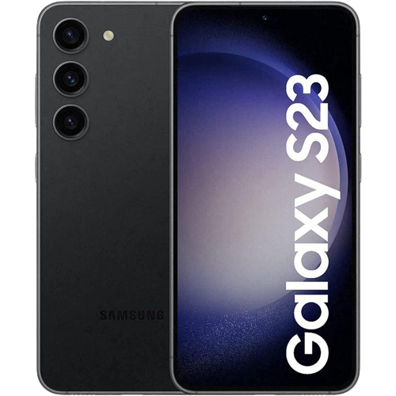

Samsung

Samsung Galaxy S23
OPŠTE KARAKTERISTIKE: Dimenzije: 146.3 x 70.9 x 7.6 mm (5.76 x 2.79 x 0.30 in) Dijagonala: 6.1 inches Rezolucija ekrana: 1080 x 2340 pixels, 19.5:9 ratio (~425 ppi density) Dostupan u bojama: Phantom Black Ram memorija: 8GB Interna memorija: 128GB MicroSDXC: Ne Zadnja kamera: 50 MP, f/1.8, 24mm (wide), 1/1.56”, 1.0µm, Dual Pixel PDAF, OIS 10 MP, f/2.4, 70mm (telephoto), 1/3.94”, 1.0µm, PDAF, OIS, 3x optical zoom 12 MP, f/2.2, 13mm, 120˚ (ultrawide), 1/2.55” 1.4µm, Super Steady video Video: 8K@24/30fps, 4K@30/60fps, 1080p@30/60/240fps, 1080p@960fps, HDR10+, stereo sound rec., gyro-EIS Prednja kamera: 12 MP, f/2.2, 26mm (wide), Dual Pixel PDAF Video: 4K@30/60fps, 1080p@30fps Procesor: Octa-core (1×3.36 GHz Cortex-X3 & 2×2.8 GHz Cortex-A715 & 2×2.8 GHz Cortex-A710 & 3×2.0 GHz Cortex-A510) Čipset: Qualcomm SM8550-AC Snapdragon 8 Gen 2 (4 nm) OSTALO: Garancija: 24 mjeseca Snaga baterije: Li-Ion 3900 mAh Senzori: Fingerprint (under display, ultrasonic), accelerometer, gyro, proximity, compass, barometer Samsung DeX, Samsung Wireless DeX (desktop experience support) Bixby natural language commands and dictation Samsung Pay (Visa, MasterCard certified) Operativni Sistem: Android 13, One UI 5.1 Mreža 5G: Da SIM: Nano-SIM and eSIM or Dual SIM (2 Nano-SIMs and eSIM, dual stand-by) 3.5mm jack: Ne NFC: Da USB: USB Type-C 3.2, OTG Objavljen: 2023, February